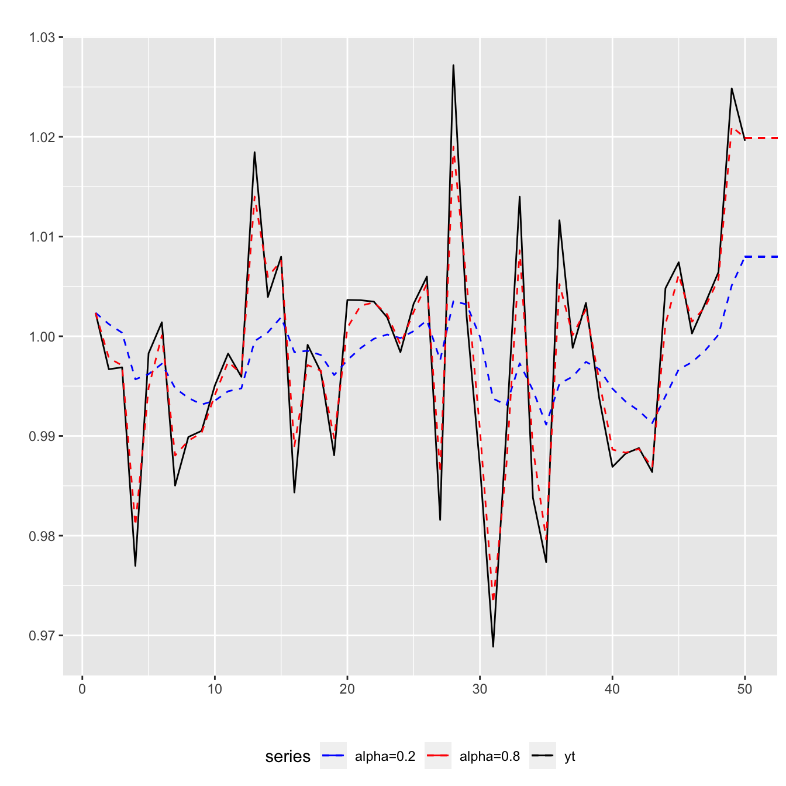
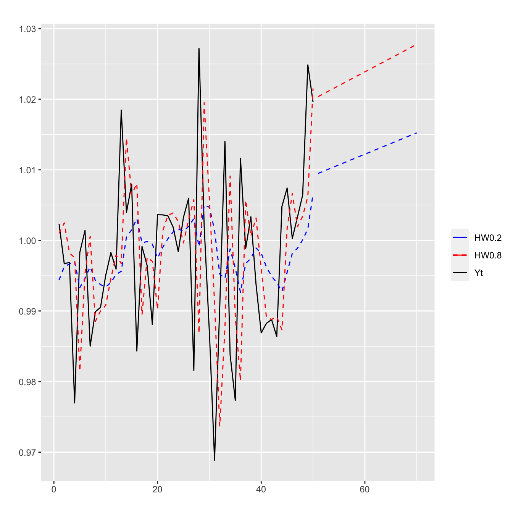
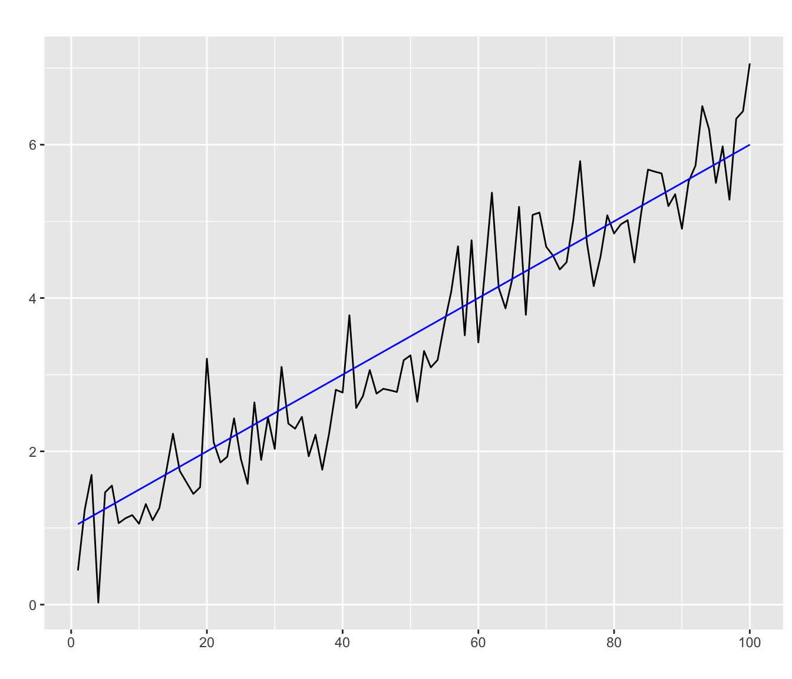

Call:
lm(formula = y ~ x1, data = dataaux)
Coefficients:
(Intercept) x1
-18.547 1.045 2 Tendances et saisonnalités
2.1 Décomposition d’une série temporelle
Comme on a pu le constater dans les exemples de l’ introduction, quitte à faire une transformation des données au préalable, on peut décomposer une série temporelle en un modèle additif composé de trois termes de la façon suivante.
Definition 2.1 (Décomposition en modèle additif)
La série temporelle \((Y_t)_{t\in T}\) se décompose en
\[ Y_t=m_t+s_t+X_t,\ \forall t\in T \tag{2.1}\]
où
- \(m_t\) est la tendance : une fonction déterministe à variation lente qui capte les variations de niveau et que l’on espère assez lisse
- \(s_t\) est la saisonnalité : une fonction déterministe périodique de période \(r\) (\(s_{t+r}=s_t,\ \forall t\)) telle que \[\sum_{h=1}^rs_{t+h}=0,\ \forall t \in T\]
- \(X_t\) est un bruit aléatoire stationnaire appelé parfois résidu. Ce terme sera à définir dans la suite.
Si la saisonnalité et les variations semblent croître, on peut parfois atténuer ce phénomène en tentant une transformation des données. C’est en particulier ce que l’on peut constater sur les données AirPassengers quand on prend leur logarithme (voir Figure 1.4). Donc quitte à faire une transformation des données, on peut supposer le modèle additif (Equation 2.1).
La méthode générale pour étudier une série temporelle est la suivante :
2.2 Estimation / élimination d’une tendance en l’absence de saisonnalité
Dans cette partie, on suppose que la série \((Y_t)_{t\in T}\) n’a pas de saisonnalité. Elle suit donc le modèle additif suivant
\[ Y_t=m_t+X_t,\ \forall t\in T. \]
Sans perte de généralité, on suppose que \((X_t)_{t\in T}\) est un processus centré (\(\mathbb E[X_t] = 0,\ \forall t\in T\)). En effet, si \(\mathbb E[X_t]\neq 0\), on remplace \(m_t\) et \(X_t\) par \(m_t+\mathbb E [X_t]\) et \(X_t-\mathbb E[X_t]\) respectivement.
On suppose également que l’on observe le processus sur les instants de temps \(t=1,\ldots,n\) : \((Y_1,\ldots,Y_n)\).
Sans exhaustivité, la fonction tendance peut prendre l’une de ces formes
- Tendance linéaire : \(m_t=\alpha_0+\alpha_1 t\)
- Tendance quadratique : \(m_t=\alpha_0+\alpha_1 t+\alpha_2 t^2\)
- Tendance polynomiale : \(m_t=\alpha_0+\alpha_1 t+\alpha_2 t^2+\cdots+\alpha_k t^k\)
- Tendance exponentielle : \(m_t=c_0+c_1\alpha^t\)
- Tendance de Gompertz : \(m_t=\exp(c_0+c_1\alpha^t)\)
- Tendance Logistique : \(m_t=1/(c_0+c_1\alpha^t)\)
- ou bien des mélanges de ces types de fonctions.
2.2.1 Estimation de la tendance par moindres carrés
Dans cette section, on suppose que la tendance est une combinaison linéaire de fonctions temporelles, connues et déterministes : \[ m_t=\sum_{j=1}^p\alpha_j m_t^{(j)}. \]
Pour déterminer \(m_t\), on cherche donc à estimer les coefficients inconnus \(\alpha_j\), pour \(j=1,\ldots,p\). Pour cela, nous pouvons utiliser l’estimation par moindres carrés.
\[\begin{eqnarray*} (\hat \alpha_1,\ldots,\hat \alpha_p) &=&\underset{(\alpha_1,...,\alpha_p)\in \mathbb R^p}{\mbox{argmin}} \sum_{t=1}^n(Y_t-m_t)^2 \\ &=&\underset{(\alpha_1,...,\alpha_p)\in \mathbb R^p}{\mbox{argmin}} \sum_{t=1}^n \left(Y_t-\alpha_1 m_t^{(1)}-\ldots - \alpha_p m_t^{(p)}\right)^2. \end{eqnarray*}\]On peut constater que l’on se ramène à un problème de régression linéaire de la forme
\[ \underbrace{ \left( \begin{array}{c} Y_1 \\ \vdots \\ Y_n \end{array} \right)}_{\mathbb Y} = \underbrace{ \left( \begin{array}{ccc} m^{(1)}_1 & \cdots & m^{(p)}_1 \\ \vdots & \ddots & \vdots \\ m^{(1)}_n & \cdots & m^{(p)}_n \end{array} \right)}_{\mathbb X} \ \underbrace{ \left( \begin{array}{c} \alpha_1 \\ \vdots \\ \alpha_p \end{array} \right)}_{\theta} + \underbrace{ \left( \begin{array}{c} X_1 \\ \vdots \\ X_n \end{array} \right)}_{\varepsilon} \] D’après les résultats de la régression linéaire, si \(\mathbb X'\mathbb X\) est inversible, \[ \hat \theta = (\mathbb X '\mathbb X )^{-1}\mathbb X' \mathbb Y. \]
On obtient alors les données corrigées de la tendance via l’expression suivante
\[ \hat Y^{\text{CT}}_t=Y_t-\hat m_t = Y_t - \sum_{j=1}^p\hat \alpha_j m_t^{(j)} \]
Example 2.1 On considère la série temporelle \((Y_t)_{t\in \mathbb N}\) définie par la relation
\[Y_t = (1+0.01\ t^2) + X_t \textrm{ avec } X_t \underset{\textrm{ i.i.d}}{\sim} \mathcal{N}(0,4^2).\] On observe les \(n=100\) premières valeurs de cette série (voir Figure 2.1, courbe noire).
On considère les trois fonctions tendances suivantes
- \(m_{1,t} = \alpha_0 + \alpha_1 t\)
- \(m_{2,t} = \alpha_0 + \alpha_1 t + \alpha_2 t^2\)
- \(m_{3,t} = \alpha_0 + \alpha_1 t + \alpha_2 t^2 + \alpha_3 t^3\)
Les coefficients sont estimés par moindres carrés pour les trois tendances :
- pour une tendance linéaire :
- pour une tendance quadratique :
Call:
lm(formula = y ~ x1 + x2, data = dataaux)
Coefficients:
(Intercept) x1 x2
-0.07851 -0.04172 0.01076 - pour une tendance cubique :
Call:
lm(formula = y ~ ., data = dataaux)
Coefficients:
(Intercept) x1 x2 x3
3.993e-01 -9.711e-02 1.212e-02 -9.005e-06 Les estimations associées à \(\hat m_{1,t}\), \(\hat m_{2,t}\) et \(\hat m_{3,t}\) sont représentées sur la Figure 2.1 en rouge, bleu et rose respectivement. Les courbes bleue et rose se superposent car la tendance recherchée \(m_t = 1+0.01 t^2\) est quadratique.
2.2.2 Estimation de la tendance par filtrage de moyenne mobile
2.2.3 Opérateurs retard et avance
Pour pouvoir parler de moyenne mobile, nous devons commencer par définir deux opérateurs importants pour ce cours de séries temporelles: les opérateurs retard \(B\) et avance \(F\).
Definition 2.2
L’opérateur retard \(B\) sur une série temporelle \((Y_t)_{t\in T}\) est défini par : \[
B\ Y_t=Y_{t-1},\ \forall t\in T.
\] On note de manière naturelle : \(B^{h}\ Y_t=Y_{t-h},\ \forall t\in T \textrm{ et } \forall h\in \mathbb N^*\).
L’opérateur avance \(F\) sur une série temporelle \((Y_t)_{t\in T}\) est défini par : \[ F\ Y_t=Y_{t+1},\ \forall t\in T. \] On note aussi \(F^{h}\ Y_t=Y_{t+h},\ \forall t\in T \textrm{ et } \forall h\in \mathbb N^*\) et \(B^{-h}\)=\(F^{h}\), pour tout \(h\).
A partir de ces deux opérateurs, on peut définir la notion de moyenne mobile.
Definition 2.3
Une moyenne mobile est un opérateur linéaire de la forme \[
M=\sum_{h=-m_1}^{m_2}\theta_h B^{-h},
\] où \((m_1,m_2)\in \mathbb N\times\mathbb N\) et \(\theta_h\in \mathbb R\) pour tout \(h\).
L’ordre de la moyenne mobile est l’entier \(m_1+m_2+1\).
La moyenne mobile est dite
- normalisée si \(\sum_{h=-m_1}^{m_2} \theta_h=1.\)
Il s’agit alors d’une moyenne au sens où on l’entend habituellement. - centrée si \(m_1=m_2\)
On prend autant d’instants du passé que du futur. - symétrique si \(m_1=m_2=m\) et \(\theta_h=\theta_{-h}\), pour \(h=1,\ldots,m\).
On donne des poids identiques aux instants passés et futurs de même ordre.
Ainsi la moyenne mobile \(M\) appliquée à la série temporelle \((Y_t)_{t\in T}\) donne
\[\begin{eqnarray*} M\ Y_t&=& \sum_{h=-m_1}^{m_2}\theta_h B^{-h}\ Y_t\\ &=&\theta_{-m_1}Y_{t-m_1}+\cdots+\theta_{-1}Y_{t-1}\\ \\ &+&\theta_0 Y_t\\ \\ &+&\theta_1 Y_{t+1}+\cdots+\theta_{m_2}Y_{t+m_2} \end{eqnarray*}\]Appliquer l’opérateur \(M\) revient donc à faire une “moyenne locale pondérée” des termes \(Y_{t-m_1},\ldots,Y_0,\ldots,Y_{t+m_2}\).
Example 2.2 (Exemple important de la moyenne mobile \(M_{2q+1}\))
Soit \(q\in \mathbb N^*\). On considère la moyenne mobile \(M_{2q+1}\) définie par
\[
M_{2q+1}Y_t=\frac{1}{2q+1} \sum_{j=-q}^qY_{t-j}.
\] \(M_{2q+1}\) est une moyenne mobile avec \(m_1=m_2=q\) et \(\theta_h=\frac{1}{1+2q} \mathbb 1_{|h|\leq q}\). C’est donc une moyenne mobile finie, symétrique et normalisée d’ordre \(2q+1\). Au vu de la définition des coefficients, cette moyenne mobile peut être vue comme un filtre “passe-bas”.
La moyenne mobile \(M_{2q+1}\) laisse invariante les tendances linéaires :
si \(m_t=a+bt\) alors \[
M_{2q+1}m_t = \frac{1}{2q+1}\sum_{j=-q}^qm_{t-j}=
\frac{1}{2q+1}\sum_{j=-q}^q (a + bt -b j) = a+bt = m_t.
\]
Soit une série temporelle \((Y_t)_{t\in T}\) de la forme \(Y_t=m_t+X_t\), où \(m_t\) est la tendance et \(X_t\) un processus centré. Si la tendance est pratiquement linéaire et que la moyenne empirique des \(X_t\) est proche de 0 (ce qui est en tout cas vrai pour \(q\) grand), on a \[ M_{2q+1}Y_t=\frac{1}{2q+1}\sum_{j=-q}^qm_{t-j}+\frac{1}{2q+1}\sum_{j=-q}^qX_{t-j}\approx m_t. \]
\(\Longrightarrow\) la moyenne mobile nous donne une estimation de la tendance quand elle est pratiquement linéaire.
Pour illustrer ce point, on observe les \(50\) premières réalisations d’une série temporelle \((Y_t)_{t\in \mathbb N}\) définie par \(Y_t = (5+0.1 t) + X_t \textrm{ avec } X_t \underset{\textrm{ i.i.d }}{\sim} \mathcal{N}(0,1)\).
La Figure 2.2 montre l’estimation de la tendance par la moyenne mobile \(M_{2q+1}\) \[
\hat m_t = \frac{1}{2q+1}\underset{j=-q}{\stackrel{q}{\sum}}\ Y_{t-j},\ \ \forall q+1\leq t \leq n-q
\] pour \(2q+1=3\) et \(2q+1=7\).
2.2.4 Estimation de la tendance par lissage exponentiel
Definition 2.4 Le lissage exponentiel simple consiste à estimer la tendance via la formule récursive suivante : pour \(\alpha\in [0,1]\), \[ \left\{ \begin{array}{ll} \hat m_t=\alpha Y_t + (1-\alpha)\hat m_{t-1}& \textrm{ pour }t=2,\ldots,n\\ \hat m_1=Y_1 & \end{array}\right. \]
Proposition 2.1 Le lissage exponentiel simple est une moyenne mobile normalisée.
On parle de lissage exponentiel car c’est une moyenne pondérée des valeurs précédentes avec une décroissance exponentielle des poids (voir Figure 2.3 (b)). Ainsi les observations les plus récentes ont le plus de poids. Le choix de \(\alpha\) est fondamental (voir Figure 2.3 (a)): Plus \(\alpha\) est proche de 1, plus on donne de poids à la dernière observation. L’estimation est alors moins lisse et on tend vers du sur-ajustement. Plus \(\alpha\) est proche de 0, plus le lissage exponentiel s’appuie sur une mémoire longue de la série temporelle.
Le lissage exponentiel simple est parfois utilisé pour la prévision. Si l’on observe la série temporelle sur les instants \(\{1,\ldots,n\}\) alors une prévision à l’horizon \(h\) de la série est donnée par :
\[ \hat Y_{n,h} = \hat Y_{n+h}=\hat Y_{n+1}=\sum_{k=0}^{n-2}\alpha(1-\alpha)^kY_{n-k}+(1-\alpha)^{n-1}Y_1 = \hat m_n. \]
La formule de mise jour du lissage exponentiel permet de voir qu’une observation supplémentaire de la série ne nécessite pas de recalculer entièrement la prévision. En effet, si on observe en plus la valeur au temps \(n+1\) alors \[ \hat Y_{n+1,1} = \hat m_{n+1} = \alpha Y_{n+1} + (1-\alpha) \hat m_n. \]
Comme évoqué précédemment, le choix du paramètre \(\alpha\) est important. On peut chercher à minimiser l’erreur de prévision :
\[ \hat \alpha = \underset{\alpha_1,\ldots,\alpha_p}{\mbox{argmin}}\ \underset{t=1}{\stackrel{n-h}{\sum}}\left(Y_{t+h}-\hat Y_{t+h}^{(\alpha_i)}\right)^2 \]
Example 2.3 On applique le lissage exponentiel simple pour deux valeurs de \(\alpha\) sur les trois séries temporelles suivantes, observées pour \(t\in\{1,\ldots,50\}\) :
- \(Y_t^{[1]} = 1 + X_t\) avec \(X_t\underset{\textrm{i.i.d}}{\sim} \mathcal{N}(0,0.01)\)
- \(Y_t^{[2]} = 1 + 0.05 t + X_t\) avec \(X_t\underset{\textrm{i.i.d}}{\sim} \mathcal{N}(0,0.1)\)
- \(Y_t^{[3]} = \mathbb{1}_{1\leq t \leq 25}+ 2 \mathbb{1}_{t>25} + X_t\) avec \(X_t\underset{\textrm{i.i.d}}{\sim} \mathcal{N}(0,0.1)\)

Dans le cadre du lissage exponentiel simple, on vient de voir que la prévision est constante. Une extension est le lissage exponentiel double où l’on souhaite une prédiction linéaire. Cette prédiction est donnée par
\[ \hat Y_{n+h} = \hat a_n h + \hat b_n \] avec
\[ \left\{\begin{array}{l} \hat a_n = \hat a_{n-1} + (1-\alpha)^2 (Y_n - \hat Y_{n-1,1})\\ \hat b_n = \hat b_{n-1} +\hat a_{n-1}+ (1-\alpha^2) (Y_n - \hat Y_{n-1,1})\\ \hat a_2=Y_2-Y_1,\ \hat b_2=Y_1 \end{array}\right. \]
Dans la même famille de méthode, on peut citer la méthode de Holt-Winters qui est un lissage exponentiel double avec une formule de mise à jour différente (voir Figure 2.5).
Example 2.4 On reprend les trois séries de l’exemple Example 2.3 et on applique un lissage exponentiel double avec la méthode de Holt-Winters.

2.2.5 Elimination de la tendance par différenciation
Definition 2.5 Soit \((Y_t)_{t\in T}\) une série temporelle.
L’opérateur différenciation à l’ordre 1 \(\nabla\) d’une série temporelle est défini par \[ \nabla Y_t=Y_t-Y_{t-1}=Y_t-BY_t=(I-B)Y_t,\ \forall t\in T. \] La différenciation à l’ordre \(k\) de la série \((Y_t)_{t\in T}\) est définie par \[ \nabla^kY_t=(I-B)^kY_t,\ \forall t\in T. \]
Attention à la manipulation de cet opérateur.
- \(\nabla^2 Y_t = (I-B)(I-B) Y_t = Y_t - 2 Y_{t-1} + Y_{t-2}\)
- \(\nabla^3 Y_t = (I-B)\nabla^2 Y_t = Y_t - 3 Y_{t-1} + 3 Y_{t-2} - Y_{t-3}\)
Proposition 2.2 Une tendance polynomiale \(m_t\) de degré \(k\) est réduite à une constante par une différenciation à l’ordre \(k\).
La différenciation permet d’éliminer les tendances polynomiales et donc pratiquement toutes les tendances car elles peuvent très souvent être approchées par des polynômes. Attention, il faut bien noter que cette technique permet d’éliminer la tendance mais ne l’estime pas.
Example 2.5 En Figure 2.6, on a simulé une série temporelle définie par \(Y_t = 1 + \frac{1}{20} t + X_t \textrm{ avec } X_t \underset{\textrm{ i.i.d }}{\sim} \mathcal{N}(0,0.25)\). On voit que la différenciation de la série \(\nabla Y_t\) élimine la tendance linéaire.

Example 2.6 Dans cet exemple, on a simulé une série temporelle définie par \(Y_t = 1 - 5\ t + 0.25\ t^2 + X_t \textrm{ avec } X_t \underset{\textrm{ i.i.d }}{\sim} \mathcal{N}(0,100)\).

2.3 Estimation / élimination de la tendance et de la saisonnalité
On considère maintenant le cas général d’une série temporelle avec une tendance et une saisonnalité présentes dans la décomposition :
\[ Y_t=m_t+s_t+X_t,\ \forall t\in T \]
avec \(\mathbb E[X_t]=0\), \(s_{t+r}=s_t\) et \(\underset{k=1}{\stackrel{r}{\sum}} s_{t+k}=0,\ \forall t\in T\).
2.3.1 Estimation par moindres carrés
On peut reprendre la méthode des moindres carrés en supposant cette fois-ci que la tendance mais aussi la composante saisonnière sont des combinaisons linéaires de fonctions connues. On suppose donc qu’il existe des fonctions \(m_t^{(j)}\) pour \(j=1,\ldots,p\), et \(s_t^{(\ell)}\) pour \(\ell=1,\ldots,q\) telles que : \[ Y_t=\sum_{j=1}^p\alpha_j m_t^{(j)}+\sum_{\ell=1}^q\beta_\ell s_t^{(\ell)}+X_t,\ \forall t\in T. \]
Pour les fonctions de saisonnalité \(s_t^{(\ell)}\), on peut par exemple considérer
- des indicatrices : par exemple dans le cas d’une saisonnalité trimestrielle \[ \forall \ell\in \{1,\ldots,4\}, s_t^{(\ell)}= \left\{ \begin{array}{cl} 1 & \text{si le trimestre à l'instant } t \text{ est } \ell \\ 0 & \text{sinon} \end{array}. \right. \]
- une combinaison de fonctions sinusoïdales.
On peut noter que les saisonnalités \(s_t^{(\ell)}\) peuvent avoir des périodes différentes.
On cherche donc à estimer le vecteur des coefficients inconnus \(\theta = (\alpha_1,\ldots,\alpha_p,\beta_1,\ldots,\beta_q)'\) par la méthode des moindres carrés. On obtient alors les estimateurs \(\hat \theta = (\hat\alpha_1,\ldots,\hat\alpha_p,\hat\beta_1,\ldots,\hat\beta_q)'\) et on récupère les données ajustées
\[ \hat Y_t=\hat m_t+\hat s_t=\sum_{j=1}^p\hat \alpha_j m_t^{(j)}+\sum_{\ell=1}^q \hat\beta_\ell s_t^{(\ell)},\ \forall t \in T. \]
La série corrigée des variations saisonnières (CVS) est alors définie par
\[\hat Y^{\text{CVS}}_t=Y_t-\hat s_t.\]
Example 2.7 Dans cet exemple, on s’intéresse à la série temporelle \(Y_t = 0.5 t + 3 \mbox{cos}\left(\frac{\pi\ t}{6}\right)+X_t,\ X_t \underset{\textrm{ i.i.d }}{\sim}\mathcal{N}(0,1)\). On considère les fonctions de tendance polynomiales \(m_t^{(j)}=t^j\) pour \(j\in\{1,2,3\}\) et les fonctions de saisonnalité définies par \(s_t^{(\ell)}=\mbox{cos}(\theta_{\ell} t)\) avec \((\theta_1,\theta_2,\theta_3)=(\frac{\pi}{6},\frac{\pi}{4},\frac{\pi}{3})\). A l’aide de la fonction lm(), on ajuste un modèle de régression linéaire
Call:
lm(formula = Yt ~ ., data = dfaux)
Residuals:
Min 1Q Median 3Q Max
-2.47779 -0.63375 -0.02225 0.67613 2.20892
Coefficients:
Estimate Std. Error t value Pr(>|t|)
(Intercept) 4.541e-02 7.165e-01 0.063 0.949761
m1 4.701e-01 1.207e-01 3.895 0.000338 ***
m2 2.578e-03 5.484e-03 0.470 0.640591
m3 -4.399e-05 7.094e-05 -0.620 0.538477
s1 3.117e+00 2.385e-01 13.068 < 2e-16 ***
s2 -4.606e-01 2.379e-01 -1.936 0.059497 .
s3 -3.389e-01 2.364e-01 -1.434 0.158912
---
Signif. codes: 0 '***' 0.001 '**' 0.01 '*' 0.05 '.' 0.1 ' ' 1
Residual standard error: 1.168 on 43 degrees of freedom
Multiple R-squared: 0.9808, Adjusted R-squared: 0.9781
F-statistic: 365.5 on 6 and 43 DF, p-value: < 2.2e-16On retrouve des estimations des coefficients en cohérence avec les données simulées. La Figure 2.8 représente les \(n=50\) premiers temps simulés de la série \(Y_t\), les données ajustées \(\hat Y_t\) et les données corrigées des variations saisonnières \(\hat Y^{\text{CVS}}_t\).
2.3.2 Estimation par Moyenne Mobile
On suppose toujours que l’on a la décomposition
\[ Y_t=m_t+s_t+X_t,\ \ \forall t\in T \]
L’idée générale est de trouver une moyenne mobile \(M\) qui vérifie les propriétés suivantes :
- la moyenne mobile laisse invariante la tendance : \(M\ m_t=m_t\)
- la moyenne mobile absorbe la saisonnalité : \(M\ s_t=0\)
- la moyenne mobile réduit la variance du processus observé : \(M\ Y_t\) a une variance plus faible que \(Y_t\).
Si on trouve une telle moyenne mobile \(M\), \(MY_t\) estime la tendance \(m_t\) et on travaille ensuite sur \(\hat Y^{\text{CT}}_t=Y_t-MY_t\) pour estimer la saisonnalité.
2.3.2.1 Cas d’une périodicité impaire
On suppose que la série temporelle admet une saisonnalité de période impaire \(r=2q+1\) et on observe cette série temporelle aux instants \(t=1,\ldots,n\).
On reprend la moyenne mobile \(M_{2q+1}\) (voir Example 2.2) symétrique, normalisée et d’ordre \(2q+1\) : \[ M_{2q+1}=\frac{1}{2q+1} \sum_{h=-q}^q B^{h}. \]
Cette moyenne mobile \(M_{2q+1}\) appliquée sur la série \((Y_t)_{t\in T}\) donne directement une estimation de la tendance et annule la saisonnalité. En effet, \[ M_{2q+1}Y_t=\frac{1}{2q+1} \sum_{h=-q}^qm_{t-h}+\frac{1}{2q+1} \sum_{h=-q}^q s_{t-h}+\frac{1}{2q+1} \sum_{h=-q}^qX_{t-h} \]
où
- le premier terme donne une estimation de la tendance si celle-ci est assez lisse
- le second terme est nul par l’hypothèse \(\sum_{j=1}^r s_{t+j}=0,\ \forall t\in T\)
- le dernier terme est quasiment nul si \(q\) est assez grand (convergence vers \(\mathbb E[X_t]=0\))
Une fois que l’on a estimé la tendance \(\hat m_t=M_{2q+1}Y_t=\frac{1}{2q+1} \sum_{h=-q}^qY_{t-h}\), on considère la série corrigée de la tendance \(\hat Y^{\text{CT}}_t=Y_t-\hat m_t\), sur laquelle on va estimer la saisonnalité.
Pour \(k=1,\ldots,r\), on calcule la moyenne \(\omega_k\) des valeurs de la série corrigée de la tendance sur tous les points à une même distance \(r\) : \[ \omega_k=\frac{1}{\text{Card}\{j:q<k+jr\le n-q\}}\sum_{\{j:q<k+jr\le n-q\}}\hat Y^{\text{CT}}_{k+jr} \]
Mais comme les termes \(\omega_k\) ne sont pas nécessairement de somme nulle, on définit comme estimateur de la composante saisonnière \[\begin{eqnarray*} \hat s_k=\left\{ \begin{array}{ll} \omega_k-\frac{1}{r}\underset{i=1}{\stackrel{r}{\sum}}\ \omega_i &\textrm{pour }k=1,\ldots,r\\ \hat s_{k-r}&\textrm{pour }k>r. \end{array} \right. \end{eqnarray*}\] Ainsi on assure que \((\hat s_t)_{t\in T}\) est bien \(r\)-périodique.
2.3.2.2 Cas d’une périodicité paire
Si la périodicité est paire \(r=2q\), on peut utiliser une approche similaire en considérant la moyenne mobile symétrique normalisée : \[ M_{2q}Y_t=\frac{1}{2q}\left(Y_{t-q+\frac{1}{2}}+\ldots+Y_{t-\frac{1}{2}}+Y_{t+\frac{1}{2}}+\ldots+Y_{t+q-\frac{1}{2}}\right), \] où \(Y_{t-\frac{1}{2}}=\frac{1}{2}\left(Y_{t-1}+Y_t\right)\) pour estimer la tendance et éliminer la saisonnalité.
Pour se convaincre que la saisonnalité est éliminée, on peut réécrire \(M_{2q}Y_t\) : \[\begin{eqnarray*} M_{2q}Y_t &=& \frac{1}{2q} \underset{h=-(q-1)}{\stackrel{q}{\sum}} Y_{(t+h)-\frac 1 2} \\ &=& \frac{1}{2q} \underset{h=-(q-1)}{\stackrel{q}{\sum}} \frac 1 2 (Y_{t+h-1}+Y_{t+h}) \\ &=& \frac{1}{4q} \left\{\underset{h=-q}{\stackrel{q-1}{\sum}} Y_{t+h} + \underset{h=-q+1}{\stackrel{q}{\sum}} Y_{t+h}\right\} \\ &=& \frac{1}{2r} \left\{Y_{t-q} + 2 \underset{h=-q+1}{\stackrel{q-1}{\sum}} Y_{t+h} +Y_{t+q}\right\} \end{eqnarray*}\]
Ainsi \(M_{2q} s_t = \frac{1}{2r} \left\{\underset{h=-q}{\stackrel{q-1}{\sum}} s_{t+h} + \underset{h=-q+1}{\stackrel{q}{\sum}} s_{t+h}\right\}=0\) car sommes de \(r\) termes consécutifs de \(s_t\).
On poursuit ensuite le même raisonnement que dans le cas d’une période impaire.
En général, on ré-estime la tendance en considérant les données corrigées des variations saisonnières et en appliquant une des techniques vues précédemment. On obtient alors \(\tilde m_t\). La série des bruits est alors \[ X_t=Y_t-\tilde m_t -\hat s_t,\forall t\in T \]
Example 2.8 On s’intéresse à la consommation trimestrielle en électricité d’une entreprise de 1997 à 1999. Les valeurs observées sont données dans la Table 2.1 et représentées en Figure 2.9. On observe une périodicité par trimestre \(r=2q=4\).
| 1997 | 1998 | 1999 | |
|---|---|---|---|
| T1 | 4.5 | 5.5 | 7.2 |
| T2 | 4.1 | 4.9 | 6.4 |
| T3 | 3.7 | 4.4 | 4.8 |
| T4 | 5.1 | 6.5 | 6.8 |
On commence donc par appliquer la moyenne mobile \(M_4\) sur la série \(Y_t\) pour estimer la tendance : \(\hat m_t = M_4 Y_t\)
Qtr1 Qtr2 Qtr3 Qtr4
1997 NA NA 4.4750 4.7000
1998 4.8875 5.1500 5.5375 5.9375
1999 6.1750 6.2625 NA NAOn forme alors la série corrigée de la tendance \(\hat Y^{\text{CT}} = Y_t - \hat m_t\) :
Qtr1 Qtr2 Qtr3 Qtr4
1997 NA NA -0.7750 0.4000
1998 0.6125 -0.2500 -1.1375 0.5625
1999 1.0250 0.1375 NA NAOn calcule alors les termes \(\omega_k\)
\[ \begin{array}{l} \omega_1 = \frac 1 2 (\hat Y^{\text{CT}}_5 + \hat Y^{\text{CT}}_9) \approx 0.8188\\ \omega_2 = \frac 1 2 (\hat Y^{\text{CT}}_6 + \hat Y^{\text{CT}}_{10}) \approx - 0.0562\\ \omega_3 = \frac 1 2 (\hat Y^{\text{CT}}_3 + \hat Y^{\text{CT}}_7) \approx -0.9562\\ \omega_4 = \frac 1 2 (\hat Y^{\text{CT}}_4 + \hat Y^{\text{CT}}_8) \approx 0.4812\\ \end{array} \]
et \(\sum_{k=1}^4 \omega_k = 0.0719\). On en déduit alors la saisonnalité estimée \(\hat s_t\) :
Qtr1 Qtr2 Qtr3 Qtr4
1997 0.746875 -0.128125 -1.028125 0.409375
1998 0.746875 -0.128125 -1.028125 0.409375
1999 0.746875 -0.128125 -1.028125 0.409375Cette procédure est faite par la fonction decompose() :
elec<-c(4.5,4.1,3.7,5.1,5.5,4.9,4.4,6.5,7.2,6.4,4.8,6.8)
autoplot(decompose(ts(data=elec,start=c(1997,1),end=c(1999,4),frequency=4),type="additive"))Example 2.9 On reprend la série AirPassengers (voir Example 1.4). La Figure 2.10 donne la sortie de la fonction decompose() appliquée sur la série logtransformée. On retrouve la saisonnalité (de période une année) et une tendance croissante pratiquement linéaire.
autoplot(decompose(log(AirPassengers),type="additive"))2.3.3 Elimination de la saisonnalité par différenciation
Pour supprimer une saisonnalité de périodicité \(r\), on peut utiliser une méthode de différenciation en utilisant l’opérateur \(\nabla_r=I-B^r\) à la série temporelle \((Y_t)_{t\in T}\) afin d’obtenir la série \[ \nabla_r Y_t=Y_t-Y_{t-r},\ \forall t\geq r \]
Cette série ne contient plus de saisonnalité car \(\nabla_r Y_t=m_t-m_{t-r}+X_t-X_{t-r}\).
On peut alors utiliser une des techniques vues précédemment pour estimer / éliminer la tendance en l’absence de saisonnalité sur la série désaisonnalisée \((\nabla_r Y_t)_{t\geq r}\).
\(\nabla_r \neq \nabla^r\)
Attention à ne pas confondre l’opérateur \(\nabla_r\) et l’opérateur \(\nabla^k\) (voir Definition 2.5).
Example 2.10 On applique l’opérateur de différenciation \(\nabla_{12}\) à la série AirPassengers logtransformée. Figure 2.11 montre la série initiale à gauche et la série différenciée \(\nabla_{12} Y_t\) à droite. Cette dernière ne présente plus de saisonnalité.